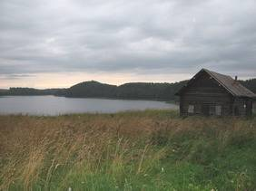
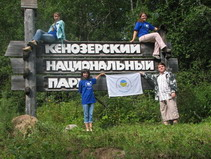
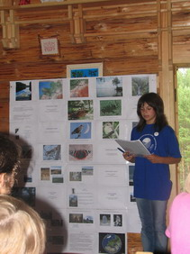
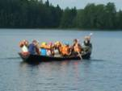
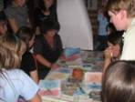
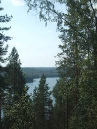
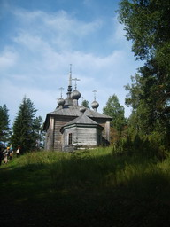
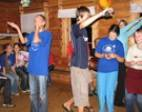
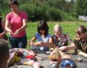
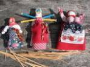

12-24 августа 2007
в Кенозерском национальном парке на базе детского экологического лагеря в д. Масельге проходили Пятые юношеские Ломоносовские чтения, которые завершили второй тур конкурса юношеских исследовательских работ имени М.В. Ломоносова.

Калининградская делегация на Ломоносовских чтениях.
Озеро Масельга.

В составе делегации клуба «Друзья НП «Куршская коса» - «Дети Нериги» была лауреат областной эколого-краеведческой конференции школьников «Друзья заповедных островов» ученица Краснолесенской основной школы Чеснулевичус Анастасия с исследовательской работой: «Виштынецкий край. Как общаются земли?». Руководителями этого исследования выступили сотрудники Виштынецкого эколого-исторического музея Сергей Чеснулевичус и Алексей Соколов.

На экологическом маршруте по системе пяти озёр.

Мастер класс экологической культуры.

Вид на озеро Масельга с Хижгоры.
Выступление Насти Чеснулевичус с докладом о виштынецкой возвышенности.

Хижгора, церковь Александра Свирского, XIX в.
Конкурсная комиссия под председательством профессора Северного государственного медицинского университета Н.А. Бебяковой отметила высокий уровень исследовательских работ калининградских школьников наградив ребят и их научных руководителей почетными дипломами и памятными подарками.
Программа конкурса, помимо дней выступлений, включала работу в мастер- классах проводимых специалистами областного дома творчества г. Архангельска, «Школы экологической культуры» (Ферапонтово), ГУ НП «Кенозерский» и «Куршская коса». Знакомство с природно-культурным наследием Кенозерского национального парка. Природным ландшафтом с архитектурными, культовыми комплексами деревень Думино, Порженское (Архитектурный ансамбль погоста 17-19 вв.), Масельга (визит центр, тропа муравейников, панорама Лекшмозера - второго по величине (после Кенозера)), Морщихинская, Гужово, Хижгора (церковь Александра Свирского, 19 в.). «Северный экватор» - часть водораздела между Белым и Балтийским морями. Пешеходно-лодочная прогулка по системе пяти озер с посещением восстановленной водяной мельницы.
Членами клуба «Дети Нериги» была организована гостиная «Заповедные острова. В гостях у Куршской косы» с показом презентаций о национальном парке «Куршская коса», Калининградской области и Виштынецкой возвышенности.
Программа конкурса, помимо дней выступлений, включала работу в мастер- классах проводимых специалистами областного дома творчества г. Архангельска, «Школы экологической культуры» (Ферапонтово), ГУ НП «Кенозерский» и «Куршская коса». Знакомство с природно-культурным наследием Кенозерского национального парка. Природным ландшафтом с архитектурными, культовыми комплексами деревень Думино, Порженское (Архитектурный ансамбль погоста 17-19 вв.), Масельга (визит центр, тропа муравейников, панорама Лекшмозера - второго по величине (после Кенозера)), Морщихинская, Гужово, Хижгора (церковь Александра Свирского, 19 в.). «Северный экватор» - часть водораздела между Белым и Балтийским морями. Пешеходно-лодочная прогулка по системе пяти озер с посещением восстановленной водяной мельницы.
Членами клуба «Дети Нериги» была организована гостиная «Заповедные острова. В гостях у Куршской косы» с показом презентаций о национальном парке «Куршская коса», Калининградской области и Виштынецкой возвышенности.
Фотографии и текст Сергея Чеснулевичуса.

Занятия в экологическом лагере.

Мастер класс по изготовлению традиционных соломенных кукол.
